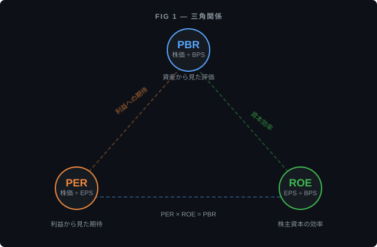
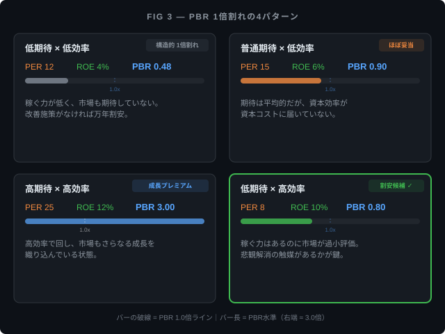

「この会社、資産のわりに株価が安くない？」を数字で確かめる — PBRの読み方¶
対象 / ポイント
対象: 前回のPER（株価が利益の何倍か）は読んだ。「じゃあ利益じゃなくて、会社の持ってる資産に対して株価が高いか安いかも見れるの？」という疑問がある方。
ポイント:
- PBRは「持ち物に対する株価の倍率」——PERが「稼ぎに対していくら？」なら、PBRは「持ち物に対していくら？」を測る指標
- 「1倍割れ＝お買い得」は成り立たないことが多い。帳簿に書いてある金額と、実際に売ったら手に入る金額は違う
- PBR = PER × ROE の関係で「なぜこの株は安く見えるのか」を稼ぐ効率と市場の期待に分解できる
まず「PBR」とは何か — 名前の前に考え方から¶
前回、PERは「株価 ÷ 1株あたりの利益」で、会社の稼ぎに対して株価が何倍かを見る指標だと整理した。
今回は視点を変える。稼ぎではなく、会社の「持ち物」に対して株価が何倍かを見る。
会社にはいろいろな持ち物がある。現金、工場、土地、在庫、他社の株式。そこから借金を差し引いた残り、つまり帳簿上、株主に帰属する資本を純資産と呼ぶ。あくまで帳簿上の数字であって、「今すぐ精算したら株主に戻ってくる金額」ではない（この点は後述する）。
この純資産を発行済みの株数で割ると、1株あたり純資産（BPS）になる。いわば「1株あたり、会社が持ち物としていくら分を持っているか」だ。
そして、株価をこのBPSで割ったものがPBR（Price Book-value Ratio、株価純資産倍率）。
たとえば、ある会社の1株あたり純資産が500円で、株価が750円なら、PBRは1.5倍。株価が400円ならPBRは0.8倍。
PBRが1倍というのは、株価と「1株あたりの持ち物の帳簿上の金額」がちょうど同じ状態。そしてPBRが1を下回る、つまり株価のほうが帳簿上の持ち物より安い状態を「PBR 1倍割れ」と呼ぶ。
ここまでは直感的にわかりやすい。問題はここからだ。
「帳簿より安いならお買い得」は本当か¶
PBR（持ち物に対する株価の倍率）が1倍を割っている、つまり「持ち物の帳簿上の金額より株価が安い」なら、お買い得に見える。会社をたたんで持ち物を売り払えば、株価より多くのお金が戻ってくる計算になるからだ。
だが、帳簿に書いてある金額は「実際に売ったら手に入る金額」ではない。
工場や設備を考えてみる。 製造業が持っている特殊な機械は、帳簿上では購入時の値段から使った分だけ減らした金額（簿価）で記録されている。しかし実際に売ろうとしても、その値段で買い手がつくとは限らない。特殊な設備なら、簿価の数分の一でしか売れないこともある。
M&Aで発生する「のれん」もそうだ。 「のれん」とは、会社が他の会社を買収したときに、相手の持ち物の帳簿価格を超えて支払った金額のこと。ブランド力や技術力、顧客基盤といった「目に見えない価値」に対する支払いだ。帳簿上は純資産に含まれているが、これ自体を切り離して誰かに売ることは難しい。
なお、のれんの会計処理は使っている会計基準で大きく異なる。国際会計基準（IFRS）ではのれんは毎年少しずつ減らす処理（償却）をしない一方、少なくとも年1回の減損テストで必要なら減額される。日本基準では最長20年で少しずつ減らしていく。同じ買収でも、会計基準によって帳簿上の持ち物の金額が変わる。
在庫も額面通りとは限らない。 倉庫にある商品は仕入れた値段で帳簿に載っている。だが売れ残って型落ちになれば、実際にはその値段では売れない。次の決算で評価損として処理されれば、帳簿上の持ち物はガクンと減る。
つまり、帳簿の数字は「換金保証額」ではない。PBR 1倍割れだからといって「下値が限定される」と即座に考えるのは、帳簿の中身を確認するまでは早い。
じゃあPBR 1倍割れは何を意味するのか¶
「お買い得」でないなら、PBR 1倍割れは何を表しているのか。
ここで、PER（稼ぎに対する期待）とPBR（持ち物に対する株価の倍率）とをつなぐ式を一つ紹介する。
※ROEは小数で代入する（ROE 10%なら0.10）。PER・ROEの期間定義は揃える。
新しい用語が出てきたので先に説明する。ROE（自己資本利益率）とは、「株主が預けたお金（＝純資産）を使って、会社がどれだけ稼いだか」を示す数字。純資産に対する利益の割合で、資本の使い方がうまいかどうかの成績表のようなものだ。
この式はどうやって出てくるか
PER = 株価 ÷ EPS（1株利益）。ROE = EPS ÷ BPS（1株純資産）。 この2つを掛け算するとEPSが相殺されて、株価 ÷ BPS = PBR になる。 つまりPBRは、もとから PER と ROE の掛け算だった。

この式で見ると、PBR 1倍割れが起きるパターンは大きく分けて4つある。
| パターン | PER（市場の期待） | ROE（稼ぐ効率） | PBR | ひとことで言うと |
|---|---|---|---|---|
| 期待も効率も低い | 12倍 | 4% | 0.48倍 | 稼ぐ力が低く、市場も期待していない |
| 期待は普通だが効率が低い | 15倍 | 6% | 0.90倍 | 稼ぐ効率が足りていない |
| 期待も効率も高い | 25倍 | 12% | 3.00倍 | よく稼ぎ、さらなる成長も期待されている |
| 効率は高いのに期待が低い | 8倍 | 10% | 0.80倍 | 実力はあるのに市場が悲観している |

4番目のパターンだけが「割安候補」になりうる。実力（ROE）はあるのに、何かの理由で市場が過小評価している状態だ。
1番目のパターンは、安いのではなく「妥当」。会社が株主から預かったお金をうまく使えていない（ROEが低い）なら、株価が帳簿上の持ち物を下回っても不思議ではない。
PBR 1倍割れは「お買い得サイン」ではなく、「この会社は資本を有効に使えていないのでは？」「成長の期待が持てないのでは？」という市場からの問いかけだと考えるほうが、実態に近い。
東証がPBRを問題視した理由¶
2023年3月、東証はプライム・スタンダードの全上場企業に対して「資本コストや株価を意識した経営」を求める要請を出した。その中で特に問題視されたのが、PBR（持ち物に対する株価の倍率）が継続的に1倍を下回っている企業だ。
ここで出てくる「資本コスト」とは、株主が「このくらいは稼いでくれるだろう」と期待しているリターンの水準のこと。企業が資本コストを推計して開示する際に7〜8%台を置く例もあるが、前提（リスクの見積もり方など）次第で変わる。
ROE（稼ぐ効率）がこの資本コストを下回っていると、「株主の期待を下回る成績しか出せていない」ことになる。それが続けば、市場はその会社に成長や効率改善を期待しなくなり、PBRは1倍を割る。
東証の要請の本質は「株価を上げろ」ではなく「稼ぐ効率を上げろ」ということだ。ROE（稼ぐ効率）が改善すれば、PER（市場の期待）が変わらなくても PBR = PER × ROE の式に従ってPBRは上がる。
PBRがうまく使えない場面¶
PER（稼ぎに対する期待）にも「赤字企業では使えない」という限界があったように、PBR（持ち物に対する倍率）にも向き不向きがある。
IT企業やコンサル会社。 こういった企業の本当の強みは、人の頭の中にある知識やアルゴリズム、ブランドにある。しかしこれらは帳簿上の持ち物にほとんど載らない。結果としてBPS（1株あたり純資産）が小さくなり、PBRが常に高い。「PBRが5倍だから割高」とは単純に言えない。
銀行・保険・証券会社。 これらの企業は持ち物の大半がお金そのもの（貸出金や有価証券）なので、帳簿の数字と実際の価値が比較的近い。裏を返すと、金融機関のPBR 1倍割れは、他の業種よりも深刻な意味を持ちうる。市場が「持っている資産の質に問題があるのでは」と疑っている可能性がある。
借金が持ち物を超えている会社（債務超過）。 純資産がマイナスになるとBPSもマイナスになり、PBRは意味のある数字を出さなくなる。PERが赤字企業で使えないのと同じだ。
最近大きな買収をした会社。 のれんが帳簿上の持ち物を膨らませるため、PBRが見かけ上低くなることがある。しかしのれんには前述の通り「実際には換金しにくい」というリスクがあるため、その「割安」は鵜呑みにしないほうがいい。
帳簿の中身を歪める要因¶
PBR（持ち物に対する倍率）の分母であるBPS（1株あたり純資産）は、会計処理によって実態以上に大きくなったり小さくなったりする。
土地の含み益。 何十年も前に買った都心の土地を、当時の購入価格で帳簿に載せたままにしている企業がある。実際の時価は何倍にもなっているが、帳簿上の持ち物には反映されない。この場合、PBRが実力より割高に見える。
ただし、株式（投資有価証券）は話が異なる。企業が保有する株式の一部は、決算時に時価で評価し直され、その差額が帳簿上の純資産に反映される。つまり同じ「含み益」でも、土地と株式では帳簿への影響が違う。「何が純資産に乗っているか」を分けて見る必要がある。
取引先との持ち合い株。 日本企業に多い慣行で、取引先の株を「関係維持のため」に持ち合っている。帳簿上は純資産に含まれるが、売ると取引関係に響くため実質的に動かせないお金になっている。
自社株買い。 会社が自分の株を市場から買い戻すと、帳簿上の純資産は減る（買い戻した株の金額分が差し引かれる）。これはBPSを下げ、PBRを押し上げる。稼ぐ効率を上げる施策としては有効だが、PBRが上がったからといって会社の実力が上がったわけではない。
PBRの使い方 — 単体で見ない、比較して見る¶
前回のPER（稼ぎに対する期待）同様、PBR（持ち物に対する倍率）も一つの数字だけで結論を出す指標ではない。
同業種の会社と比べる。 持ち物の構成が似ている会社同士でないと比較は意味がない。IT企業と製造業のPBRを並べても得られるものは少ない。
PER（期待） × ROE（効率） で原因を分解する。 PBR 1倍割れを見つけたら、「PER（市場の期待）が低いのか、ROE（稼ぐ効率）が低いのか、両方か」を確認する。
| PBR 1倍割れの原因 | まず確認すること | 考え方 |
|---|---|---|
| ROEが低い（稼ぐ効率の問題） | 会社に改善の計画や具体策があるか | 計画がないと「ずっと安いまま」になりやすい |
| PERが低い（市場の期待が低い） | 悲観の原因が一時的か、構造的か | 一時的なら株価が戻るきっかけ（カタリスト）があるか |
| 両方 | 業界全体の問題か、その会社だけの問題か | 業界全体の向かい風なら、1社の努力では解消しにくい |
会社自身の過去と比べる。 過去5年の平均PBRに対して今どこにいるかを見る。ただし大型買収や事業転換があると、過去との比較が成り立たなくなる。
「のれんを除いた純資産」で計算し直す。 金融情報サービスによっては「有形純資産（Tangible Book Value）」を提供しているものがある。のれんが純資産の大部分を占める企業では、この調整でPBRの印象がガラッと変わる。
まとめ¶
- PBR（持ち物に対する倍率）は「会社の持ち物に対して株価が何倍か」を見る指標。PER（稼ぎに対する期待）の「稼ぎ軸」に対する「資産軸」
- 帳簿上の持ち物と実際に換金できる金額は一致しない。PBR 1倍割れ＝お買い得、ではない
- PBR = PER × ROE の関係で、「安く見える原因」を稼ぐ効率（ROE）と市場の期待（PER）に分解できる
- IT企業、金融機関、買収直後の企業ではPBRの読み方が変わる
- 土地の含み益、株式の時価評価、持ち合い株、自社株買いが帳簿の数字を歪める
前回のPER（稼ぎに対する期待）、今回のPBR（持ち物に対する倍率）で、「稼ぎに対して高いか安いか」と「持ち物に対して高いか安いか」の2つの軸が揃った。どちらの指標も、単体では「買いか売りか」の答えは出せない。指標が示すのは「市場参加者が今どう見ているか」であり、その見方が正しいかどうかは別の問題だ。
次回は、PERの分母である「1株あたり利益（EPS）」そのものの質を見る。同じ利益額でも、中身が全然違うケースがある。自社株買い、一時的な特別利益、会計基準の違い — 利益の「質」を見分ける目を養う。